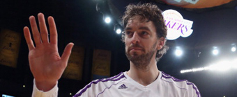
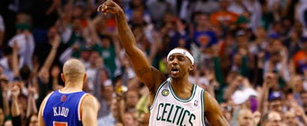
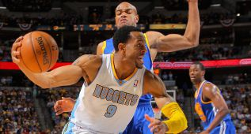

Golpe decisivo de los Grizzlies, con Marc Gasol al frente
LA CLIPPERS 93-GRIZZLIES 103 (2-3)
Los Memphis Grizzlies han asestado a Los Angeles Clippers el que puede ser el golpe decisivo en su serie inicial de playoffs del Oeste. En el proximo partido, en la madrugada del viernes al sábado en Memphis, los Grizzlies dispondrán de su primera oportunidad para pasar a la siguiente ronda.
Pau no impide una debacle histórica y dice adiós

Nada más caer eliminado, Pau Gasol se prepara para jugar el choque más difícil de su temporada como es lidiar con los continuos rumores sobre su salida del equipo. Querido por la afición, Gasol quiere seguir en los Lakers, pero sabe que eso no depende de él.Terry mantiene con vida a los Celtics tras exhibirse en la prórroga

El base reserva Jason Terry recuperó su condición de sexto hombre estelar y condujo a los Celtics de Boston al triunfo (97-90) sobre los Knicks en la prórroga del cuarto partido de la serie de la Conferencia Este de la NBA.Iguodala, Lawson y Faried dan confianza a los Nuggets

Andre Iguodala encabezó el ataque de unos Nuggets que se impusieron a los Warriors en el quinto partido de la eliminatoria de la primera ronda del Oeste.Bryant: "Con Gasol podemos seguir ganando títulos" "Al final sólo importa lo que él decida de corazón. Mi relación con Pau fue increíble desde el primer día en que llegó. Siempre fuimos como hermanos".El mundo del deporte se vuelca con la "valentía" de Collins Jugadores, políticos y personalidades muestran su "orgullo". Ginóbili: "Quizá algún día la condición sexual de los deportistas resulte irrelevante".
Parsons y Asik evitan la eliminación de los Rockets El alero y el pívot turco fueron la combinación perfecta que permitió a los Rockets de Houston ganar por 105-103 a los Thunder de Oklahoma City. La victoria dejó a los Rockets con la primera en la serie que disputan al mejor de siete y evitaron la barrida para alargarla al quinto partido que se jugará en Oklahoma City el próximo miércoles.Brook López y Williams mantienen con vida a los Nets La combinación del pívot Brook López y el base Deron Williams fue la clave que permitió a los Nets vencer a los Bulls en el quinto partido. La victoria mantiene con vida a los Nets en la eliminatoria que dominan los Bulls por 3-2 al mejor de siete partidos. El sexto se jugará jueves en el United Center de Chicago.Josh Smith impuso su poder y los Hawks empatan la serie El ala-pívot surgió en el momento que más lo necesitaban los Hawks y los guió al triunfo sobre los Pacers en el cuarto partido de su eliminatoria.

 NBA
NBA